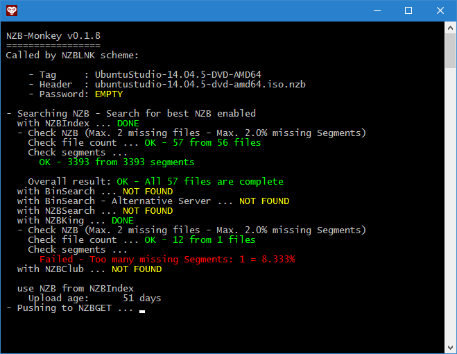

NZBLNK™ download helper
View the Project on GitHub nzblnk/nzb-monkey
NZB Monkey makes your live much easier by supporting the search/download/rename/apply process of NZB files into your favorite download tool.
A running NZB Monkey looks like this:

The NZB Monkey is at the moment only available for Windows and Linux platform. For macOS user we are working hard on a solution to bring you the same experience like the other OSs.
Please create a folder where you finally want to locate the NZB Monkey. Copy the contents of the downloaded ZIP archive (the nzbmonkey.exe) into this folder and start the nzbmonkey.exe (by double clicking it).
If a error appears the system asking for MSVCR100.DLL please download the Microsoft Visual C++ 2010 Redistributable Package (x86) and install it.
After the first start is a configuration in the registry saved, which enables the monkey to catch all clicks on a NZBLNK™ link.
Important: Please do not move the EXE file after the first start. If you want to move the exe somewhere else on your computer please remove your CFG file (rename it or move it somewhere else) and start the monkey on its new location. The configuration in the registry is now updated. Copy your config back afterwards.
If everything went right there should be a nzbmonkey.cfg nearby the EXE file and it opened automatically with Notepad. Please continue reading with the configuration.
Please create a folder where you finally want to locate the NZB Monkey. Move the downloaded tar file into this folder and extract it with tar -xzf <tar filename> e.g. tar -xzf nzbmonkey_source_0.1.8.tar.gz.
Execute the config script ./nzblnkconfig.py, which enables the monkey to catch all clicks on a NZBLNK™ link and checks all dependencies.
Dependencies output example:
Missing module(s)!
To use NZB-Monkey you have to install the missing module(s) use
pip3 install --user pyperclip requests configobj colorama
to install the missing module(s) in your home directory,
sudo -H pip3 install pyperclip requests configobj colorama
to install the missing module(s) globally to your client/server
or use your package manager to install the missing Python3 module(s): pyperclip requests configobj colorama.
To have a working pyperclip module you have to install xsel or xclip, see also pyperclip doku:
https://pyperclip.readthedocs.io/en/latest/introduction.html
Resolve all dependencies before you continue.
Important: Please do not move the NZB Monkey files after this NZBLNK™ registration.
If you want to move them somewhere else on your computer, please execute the config script./nzblnkconfig.pyon the new location to update the NZBLNK™ registration.
Now start NZB-Monkey ./nzbmonkey.py. This creates a default configuration file nzbmonkey.cfg and opened it with the default editor.
Please continue reading with the configuration.
The configuration file (ending .cfg) is in the same folder like the main application. Open it with your favorite editor.
It contains so called "sections" witch are marked by square brackets.
The GENERAL section has only two options:
[GENERAL]
target = EXECUTE
categorize = off
The first key here is target. It can have four values:
EXECUTE - The NZB is handled by a software registered to the filetype .NZB on same machine. Comparable by downloading the NZB file to the hard disk and executing (double clicking) it.
SABNZBD - The NZB is pushed to a SABnzbd on the same network or computer. Described here
NZBGET - The NZB is pushed to a NZBGet on the same network or computer. Described here
SYNOLOGYDLS - The NZB is pushed to a Synology Download Station on the same network or computer. Described here
EXECUTE is the default.
The second one is categorize which switches the categorisation modes. Options are here:
off - The default. Does nothing.
auto - The monkey tries to guess the category by the tagname. More information about it here.
manual - Before sending the NZB file to your download target, the monkey "asks" it for your categories. These will be shown and you have to choose one by pressing the corresponding number on you keyboard. This only works with NZBGet and SabNZBd.
[EXECUTE]
passtofile = True
passtoclipboard = True
nzbsavepath = c:\path\to\your\nzb\files\
dontexecute = False
clean_up_enable = False
clean_up_max_age = 1
Here is everything specified which belongs to the local handling of NZB files. This brings some handy options making the lives easier even without a downloading solution like NZBGet or SABnzbd.
passtofile enables the filename extension by an optional password in curly brackets {{password}}. It's a boolean value, which means it holds the word "True" or "False". Default is True.
passtoclipboard enables the monkey to copy the optional password into your clipboard. Default is False.
nzbsavepath holds the path to the folder where your NZB files are stored to.
dontexecute if set to True, the monkey does not "start" the NZB file after downloading. This is great for just downloading the NZBs. Default is True.
clean_up_enable makes sure that old NZBs are deleted from your download folder. Default is False.
clean_up_max_age sets the time in days how long the NZBs kept. Default is 2 days.
For SABnzbd users is the section
[SABNZBD]
host = localhost
port = 8080
ssl = False
nzbkey =
basicauth_username =
basicauth_password =
basepath = sabnzbd
category =
addpaused = False
interesting. Here are all the parameters specific to SABnzbd set up:
host sets the hostname or IP of your SABnzbdport sets the port. 8080 is default for HTTP and 9090 is default for HTTPS.ssl enables SSL/TLS when set to True. Default is False.nzbkey is the "API Key" (was the NZB Key in the past!) from your SABnzbd configuration (General/ API Key)basicauth_username and basicauth_password are used to do a basic authentication (fill out only if you need it)basepath is the API endpoint. Change this only if needed.category is one of the configured categories (Categories). Empty is default category. If category choosing is enabled, this will be overwritten.addpaused can be set to True if every NZB should be added in pause stateFor NZBGet users is the section
[NZBGET]
host = localhost
port = 6789
ssl = False
user = nzbget
pass = tegbzn
category =
basepath = xmlrpc
addpaused = False
interesting. Here are all the parameters specific to NZBGet set up:
host sets the hostname or IP of your NZBGetport sets the port. Default is 6789.ssl enables SSL/TLS when set to True. Default is False.user is the "AddUsername" set in your NZBGet Security settings.pass is the "AddPassword" set in your NZBGet Security settings.basepath is the API endpoint. Change this only if needed.category is one of the configured categories in your NZBGet Categories settings. Empty is no category. If category choosing is enabled, this will be overwritten.addpaused can be set to True if every NZB should be added in pause stateOwner of a Synology DiskStation Manager can use the Download Station. To configure it this section is used.
[SYNOLOGYDLS]
host = localhost
port = 5000
ssl = False
user =
pass =
basepath = webapi
host sets the hostname or IP of your Synologyport sets the port. Default is 5000. For SSL its normally 5001ssl enables SSL/TLS when set to True. Default is False.user is the user on your DiskStation who has access to the Download Station softwarepass is the corresponding password.basepath is the API endpoint. Change this only if needed.Known bugs: The monkey also pushes the "unzip password" to the Download Station. There is a bug in their API so it doesn't use the password. Please add it manually.
The NZBCheck section lets you configure the NZB verification mechanism.
[NZBCheck]
skip_failed = True
max_missing_segments_percent = 2.0
max_missing_files = 2
best_nzb = True
skip_failed on True stops the processing on broken NZBs. This is great for new uploads. Some search engines hand out "broken" NZBs. Default is True.max_missing_segments_percent defines the threshold in percent where the monkey should stop accepting the NZB. Default is 2.0.max_missing_files defines the threshold in total number of missing files where the monkey should stop accepting the NZB. Default is 1.best_nzb set on True checks all search engines and chooses the best one. False stops after the first successful NZB. Default is True.In the Searchengines section are the order and the use of search engines configurable.
[Searchengines]
binsearch = 1
binsearch_alternative = 2
nzbking = 3
nzbindex = 4
All keys are the corresponding search engines. A value of 0 means disabled. A value bigger than 0 means enabled. Bigger numbers mean a lower priority. A search engine with a 3 is checked after one with a 2. Default for all search engines is 1.
The CATEGORIZER section defines the "searchterms" for a category guessing. It looks like this:
[CATEGORIZER]
series = (s\d+e\d+|s\d+ complete)
movies = (x264|xvid|bluray|720p|1080p|untouched)
There weird characters are Regular Expressions. Each value of this entries is tested against the current tagline. A positive finding stops the testing and the keyword (ex. "series") is used as category.
After successful installation you can click a link like this and the NZB Monkey should open.